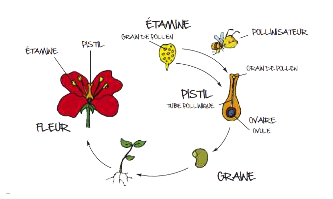
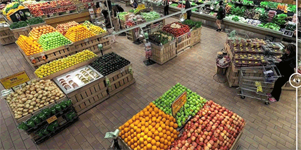

LEUR TRAVAIL

Tu vois, les fleurs deviennent des fruits grâce au travail du vent et des insectes (abeilles, papillons, bourdons…).
Les abeilles visitent beaucoup de fleurs dans une journée, elles transportent donc beaucoup de pollen d’une fleur à l’autre. Elles font parties des insectes pollinisateurs les plus efficaces.
Tu comprends maintenant pourquoi les abeilles sont si importantes pour la nature et pour l’homme !Sans elles, nous n’aurions ni de fruits ni de légumes pour nous nourrir.
